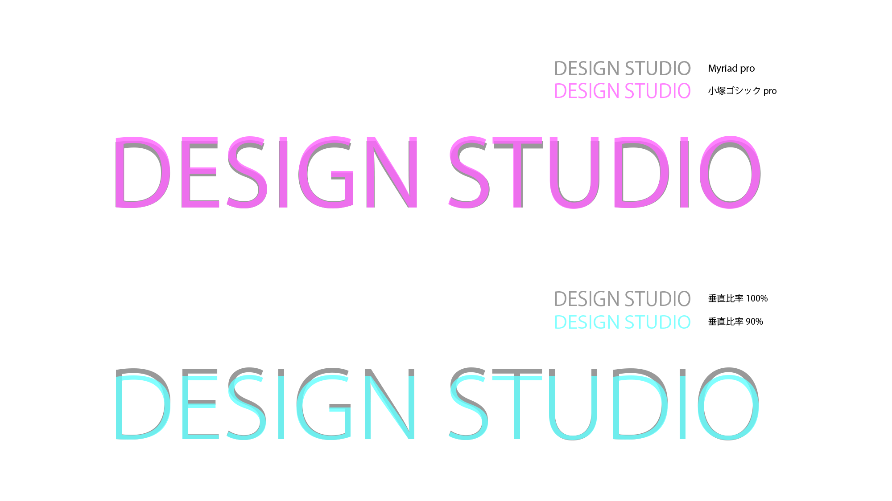
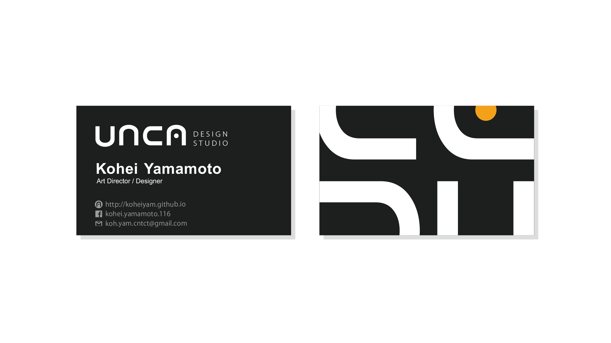

unca
これはぼくのVisionそのもの。
どんなデザイナーで在り続けたいか、どんなモチベーションでいたいか。そんなことを考えながら、将来のデザイン事務所を想像しました。

"unique casts"
uncaデザイナーは、一人ひとりが "アクター" であり "プレイヤー" です。
・クライアントに寄り添い、創り上げていく"アクター"としてのデザイナー。
・プロジェクトを純粋に楽しむ"プレイヤー"としてのデザイナー。
そんな自立したuncaメンバーが集うことで、各々のユニークな役割を果たし、一人では生み出せないクリエイティブな劇場をuncaは目指します。
unca Value
1. Quest with buddy
こたえはすぐに見つからない。
一人では辿り着けないこたえを、一緒に探していこう。
2. Create Story
デザインはただつくるのではない。
愛されるために、物語をつくっていこう。
3. All you need is creed
駄作をつくってはいけない。
みんなが幸せになるよう、限界までつくり続けよう。
ここからロゴのお話
自立性と統一性
メンバー個々の活躍とチームワークを表現。メンバーごとに作風が異なるため、uncaとしての先入観を取り払うべくシンボルを無くすことに。 文字の一つひとつを大きくしっかりした形に整え、反復し、字間を揃えることで自立と統一感を両立させました。


細く美しく、人間らしい暖かさを
機械的にならず愛のある印象を与えるため、ベースとなるフォントは繊細なヒューマニスト体Myriadから始まりました。"unca"の一文字ずつが正方形に近くデザインされているので、和文フォントに合わせて再設計された小塚ゴシックproを採用。微調整を施して、より有機的でしっかりした印象表現に成功しました。
 